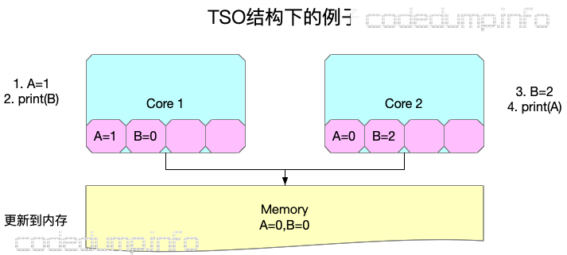
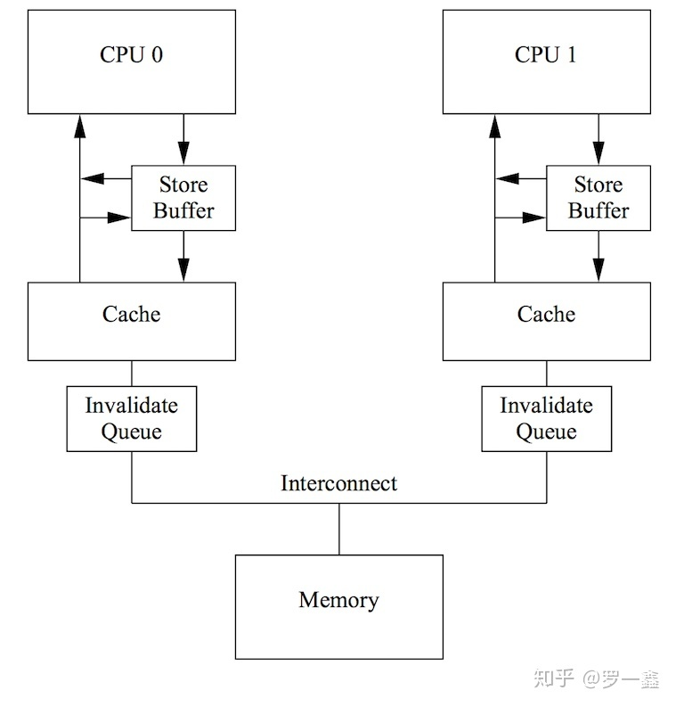

CPU memory order: Part 1 summary
1. Introduction
This article summarizes all the memory order related resouce since it is a hard to understand concept
2. Target Audience
Developer with basic cpu background
3. Summary
As described in Computer Architecture: A Quantitative Approach Chapter 5.6:
The most straightforward model for memory consistency is called sequential consistency. Sequential consistency requires that the result of any execution be the same as if the memory accesses executed by each processor were kept in order and the accesses among different processors were arbitrarily interleaved.
The key idea in relaxed consistency models is to allow reads and writes to complete out of order, but to use synchronization operations to enforce ordering, so that a synchronized program behaves as if the processor were sequentially consistent. There are a variety of relaxed models that are classified according to what read and write orderings they relax. We specify the orderings by a set of rules of the form X→Y, meaning that operation X must complete before operation Y is done. Sequential consistency requires maintaining all four possible orderings: R→W, R→R, W→R, and W→W. The relaxed models are defined by which of these four sets of orderings they relax:
- Relaxing the W→R ordering yields a model known as total store ordering or processor consistency. Because this ordering retains ordering among writes, many programs that operate under sequential consistency operate under this model, without additional synchronization.
- Relaxing the W→W ordering yields a model known as partial store order.
- Relaxing the R→W and R→R orderings yields a variety of models including weak ordering, the PowerPC consistency model, and release consistency, depending on the details of the ordering restrictions and how synchronization operations enforce ordering
From the implmentation perspective:
In Sequential Consistency model, in a multi-core architecture, each CPU has a dedicated L1/L2 cache and share L3 cache. From my understanding, instruction execution and memory commit is observable globally(can be seen by other core), as indicated by definition: "... the result of any execution is the same as if the operations of all the processors were executed in some sequential order, and the operations of each individual processor appear in this sequence in the order specified by its program"

(from C++11中的内存模型上篇 - 内存模型基础 - codedump的网络日志)
In TSO memory model, Store FIFO is introduced between cache and execution unit, which is a significant difference between TSO and Sequential Consistency. So that Store-Load re-ordering is permitted.

(from C++11中的内存模型上篇 - 内存模型基础 - codedump的网络日志)
In Weak memory model, invalid queue is introduced to cache the "invalidation message of cache line", so that even cpu0 write 1 into x and flush store buffer into cache. Then cpu1 read x as 0 is still permitted。Because invalidation message for this cache line is still buffered in invalid queue and not take effect. 
(from 当我们在谈论cpu指令乱序的时候，究竟在谈论什么？)
Memory mode summary and comparison:
| memory model | ordering | CPU ISA | C++ 11 Atomic type |
| ------------------------- | ------------------------------------------------------------------------ | ---------------------------------------------- | ---------------------------------------------------------------------- |
| Sequency consistency | no re-order | 80386
arm(in-order execution, a53) | memory_order_seq_cst |
| total store ordering(TSO) | Store-Load
re-order | modern x86 | memory_order_acquire
memory_order_release
memory_order_acq_rel |
| weak consistency | Store-Load
Store-Store
Load-Load
Load-Store
all re-order | arm(out-of-order Execution, ares),
PowerPC | memory_order_relaxed |
When we are talking about store buffer, there introduces the concept of store atomicity as defined by Weak Memory Models: Balancing Definitional Simplicity and Implementation Flexibility :
Single-copy atomic: a store becomes visible to all processors at the same time, e.g., in SC.
Multi-copy atomic: a store becomes visible to the issuing processor before it is advertised simultaneously to all other processors, e.g., in TSO and Alpha.
Non-atomic (or non-multi-copy-atomic): a store becomes visible to different processors at different times, e.g., in POWER and ARM.
Single-copy atomic is too strict which is only available on Sequential Consistency.
Multi-copy atomic is mostly common on moder x86 which is TSO. And in some recent ARMv8 revision, it is also supported Multi-copy Atomicity and Barriers .
Non-atomic is mostly seen on the early ARMv8 revision and ARMv7 architecture.